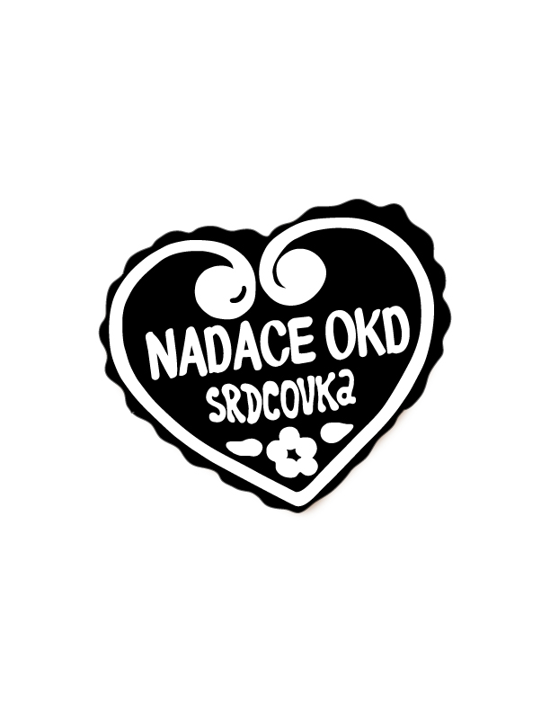

Mezi zaměstnanci našich dárců je mnoho aktivních lidí, kteří se ve svém volném čase věnují nejrůznějším veřejně prospěšným aktivitám, ať už se jedná o sbory dobrovolných hasičů, přípravu kulturních a sportovních akcí pro veřejnost, děti nebo kolektivy zdravotně či sociálně znevýhodněných osob nebo zájmové kroužky v různých oblastech činnosti.
Díky programu Nadace OKD s názvem Srdcovka, mohou požádat zaměstnanci společnosti OKD, a.s, Green Gas DPB a Green Gas Drilling, s.r.o. o finanční podporu neziskovým organizacím na jejich činnost. Záleží nám na tom, aby byli zaměstnanci našich dárců a partnerů nejen motivováni ke své práci, ale aby se i mimo ni aktivně podíleli na rozvoji občanské společnosti.
Výsledky výzvy Srdcovka 2026 ZDE!